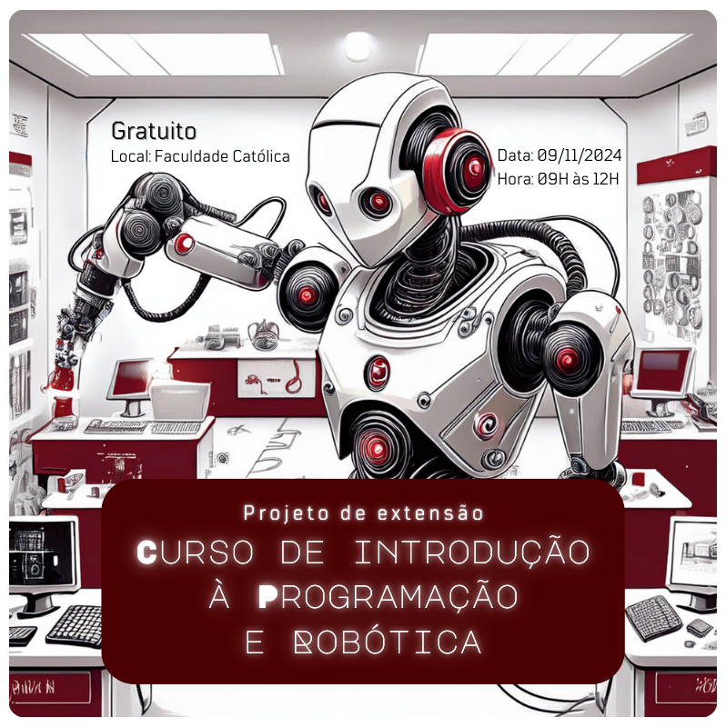

×

CatolicaSC - 2024
CURSO DE INTRODUÇÃO A PROGRAMAÇÃO E ROBÓTICA
Programação básica para a comunidade
CURSO DE INTRODUÇÃO A PROGRAMAÇÃO E ROBÓTICA
Curso gratuíto de introdução a robótica e programação
desenvolvida pela 1ª fase da Engenharia de software
Local: Centro Universitário Católica de Santa Catarina - Joinville
Data: 09/11/2024
Horario: 09:00 às 12:00